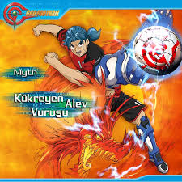
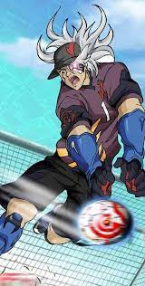
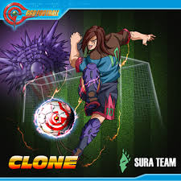
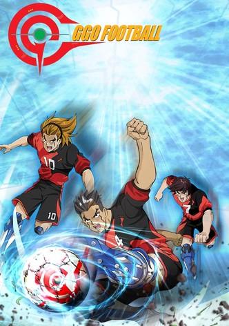

Myth'in geliştirdiği bu hareket, topa öyle bir güçle vurur ki, rakip savunmasını geçmek neredeyse imkansız hale gelir. Topun hızını ve gücünü hesaplamak oyuncuların yeteneklerine bağlıdır. Bu teknik, özellikle kaleciye karşı çok etkili bir stratejidir.

Shawn tarafından kullanılan bu teknik, topu hava ve yer arasında hızlı bir şekilde yönlendirerek rakiplerin şutlarını kurtarır. Gölge Kurtarışı, savunmada mükemmel bir beceri gerektirir ve rakiplerinin hızlı şutlarına karşı etkili bir savunma yapar.

Bu teknik, topu çapraz bir açıyla hızla kaleye yönlendiren bir vuruş hareketidir. Oyuncular, hızla rakip savunmasını aşarak gol yapmayı hedeflerler. Özellikle topun hızını artırarak rakibi şaşırtma özelliği ile dikkat çeker.

Timmy'nin kullandığı bu hareket, rakiplerin hızla ilerlemesini engellemek için kullanılır. Savunma oyuncusu, rakibin hızını kendi lehine çevirecek şekilde pozisyon alır. Bu teknik, hem topa sahip olma hem de rakibi zor durumda bırakma konusunda mükemmel bir beceri gerektirir.
